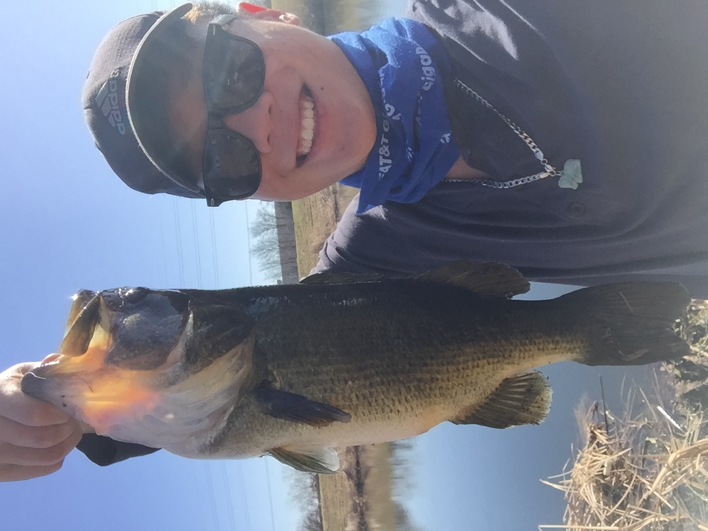

This week I worked on finishing up the Collatz project. It took me 10 hours above my
estimate because Hackerrank was being stupid and screwed up when running my submission
somehow. My code was correct, however it kept giving me a wrong answer alert on the
third test. I checked pretty much ever single edge case, and tried rewriting my code several
times.
After toiling away for a weekend, I tried to submit it again on Tuesday, having changed nothing in my code, and surprise surprise, it worked! Though I am happy I finally figured it out, I am kind of upset that Hackerrank wasted 10 hours of my life doubting my sanity. Oh well :)
Now I need to get on top of the attendance portion of the class because I missed two classes in a row and a roll call attendance check as well. I hope this next project should be easier because it will be a collaboration with 4 other people.
This class has still been pretty good so far, I've expanded my knowledge of python despite knowing a decent
amount going into it. The projects seem pretty useful in explaining the tools of the industry, and I'm glad to get a lot of exposure to industrial practices like Continuous Integration, rigorous test harnesses, and communication about project specs.
Furthermore, I enjoy having some introductory knowledge into the agile method of software development, more specifically, the extreme programming flavor of it. From my experience, very many companies list on their recruitment pages that they value their candidates having exposure to agile and/or scrum. This class seems to be very relevant and helpful to my professional pursuits in the future.
My tip of the week is to do a little work every day instead of trying to knock out the project all in one block. This is because if Hackerrank decides to crap out on you for one day, you won't waste 10 hours of time trying to debug a working solution, and instead, you can wait out its faulty testing servers and fix it immediately the next day.
My pick of the week is the matplotlib/jupyter notebook/pandas triple headed dragon combination for data analysis purposes. In my data mining class, we have been using those tools to derive patterns from data and visualize them in a form people can easily understand, and they have been easy and intuitive to use for me. Check it out!